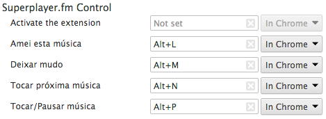

Superplayer Control
Superplayer Control

Como editar os atalhos?
1. Com o Google Chrome aberto, abra a seguinte página: chrome://extensions/

2. Ao final da página, clique em "Atalhos de teclado":

3. Edite os atalhos como preferir e pressione "OK": 